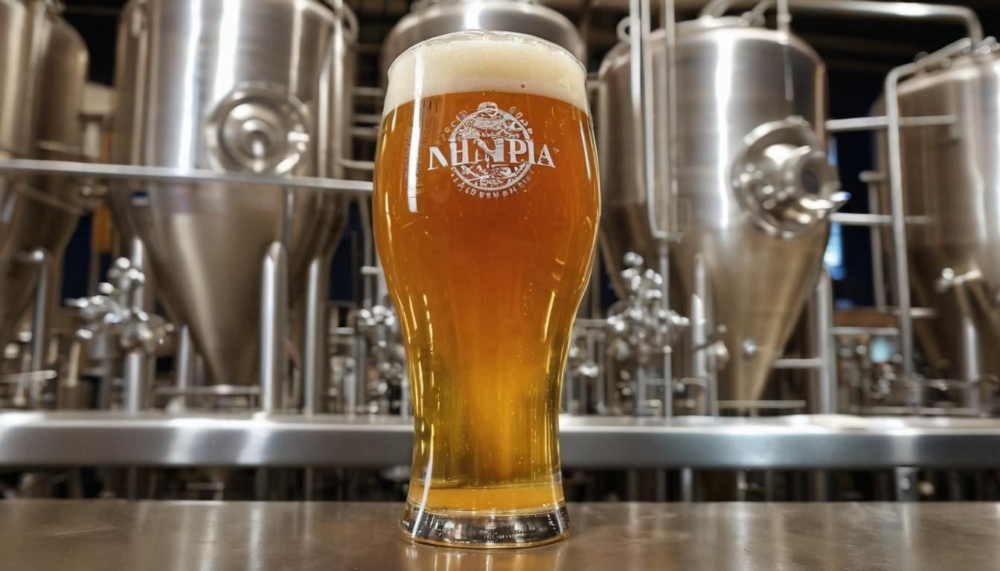

IPA - Americas Favorite Beer Type
India Pale Ale (IPA) stands out among beers for its strong hop character and bold flavors. Originating in England during the 18th century, this beer style was crafted with extra hops and higher alcohol content. These choices weren’t random; they were vital for preserving the drink over long sea voyages to India. As we dive deeper into IPAs, you'll uncover how these historical needs have shaped what we taste today.
Fast forward to now, craft breweries worldwide have taken on the IPA challenge with gusto, experimenting with new hop varieties and brewing methods. From citrusy American hops to piney European ones, each adds distinct character to an IPA. This guide is crafted after thorough research and practical insights aimed at unpacking everything you need—from historical roots to modern-day brewing techniques—to fully appreciate and master your own IPA creations.
One popular choice for beginners is Sierra Nevada Torpedo Extra IPA. Its balanced flavor profile and widespread availability make it a great starting point for those new to India Pale Ales.
What Is India Pale Ale?
India Pale Ale (IPA) isn't just any beer; it has a story steeped in history and flavor. Originally brewed in England during the 18th century, IPAs were crafted with a twist—extra hops and a higher alcohol content than the traditional pale ales of that time. Why the extra hops and higher alcohol content? Well, it all goes back to the long sea voyages from England to India.
To understand why IPAs were brewed this way, we have to journey through time back to when the British Empire flourished. Picture this: English soldiers and administrators stationed in India craved their beloved beer from home. However, the beer would spoil on the long sea journey from England to India. No refrigeration existed at that time to preserve perishable items like beer for such extended periods.
Every day at sea meant exposure to fluctuating temperatures, salty air, and motion that could easily disturb stored cargo. Traditional beers would quickly spoil under these conditions, leaving soldiers in India with quite a bitter thirst—clearly something had to change.
And so, brewers found the solution by adding more hops (a natural preservative) and increasing the alcohol content of the beer. This enabled them to withstand the arduous journey and arrive in perfect condition for consumption.
Fast forward to today, IPAs have become a staple among craft breweries worldwide. They are celebrated for their bold hop aromas and flavors, which can range from zesty citrus notes to earthy pine and even delicate floral undertones. The beauty of IPAs is their diverse flavor profile—which can be like taking a stroll through a garden or an orchard.
Hop characteristics play a pivotal role in determining an IPA's taste. The flavor profile is often influenced by factors such as hop variety, origin, and brewing techniques. For example, hops grown in different regions can produce contrasting flavors due to variations in soil composition and climate conditions.
Keep in mind: Understanding hop varieties adds another layer of appreciation when sampling different IPAs.
With its rich history and ever-evolving flavor journey, India Pale Ale stands as a testament to the creativity and innovation within the art of brewing. It's much more than just a type of beer—it's a reflection of craftsmanship and adaptation over time.
Moving forward into our exploration of IPA's captivating legacy, let's uncover the fascinating historical background that shaped this iconic brew.
Historical Background of IPA
The captivating history of India Pale Ale (IPA) is as intriguing as it is flavorful. It all began in the late 1700s when British brewers faced a unique challenge - how to supply their beloved beer to distant colonies, particularly India, where British expatriates longed for a taste of home. The sea journey was treacherous, lasting several months, and traditional beers often spoiled along the way. The answer to this dilemma lay in creating a beer that could withstand the arduous voyage.
To craft a durable beer for the long sea journey, English brewers developed India Pale Ale – a beer with a higher alcohol content and an abundance of hops. Hops act as natural preservatives that extend the shelf life of the beer while adding distinct bitterness and aromatic flavors. This bitter kick also had another purpose—protecting the beer from pests during transit.
The credit for popularizing this style is often bestowed upon George Hodgson of the Bow Brewery, who recognized the potential of shipping beer to India and seized the opportunity. Soon, his brewery became renowned for producing an export version of pale ale that was sturdy enough to survive the tumultuous voyage across oceans.
Over time, IPA took on different forms as it traveled to various corners of the world. As it made its way to the United States, IPA underwent a significant transformation during the craft beer renaissance in the 20th century. American brewers reimagined and diversified the style, adding their own unique twists while revitalizing its popularity among beer enthusiasts.
The evolution of IPA has been nothing short of remarkable, transitioning from a solution to a logistical challenge to becoming one of the most beloved and diverse styles in today's craft beer landscape. Its journey encapsulates an intriguing blend of necessity, innovation, and cultural adaptation that continues to shape the brewing world today.
The intricate history behind IPA's development sets the stage for a closer examination of its intricate brewing process.
Brewing Process of IPA
Brewing an India Pale Ale is a labor of love, with each step contributing to the distinct flavor and character of this beloved beer style. Unlike the streamlined process of brewing more conventional beers, the creation of an IPA demands special attention to ingredient selection, meticulous mashing, expert boiling techniques, precise fermentation, and patient conditioning.
Step I - Selecting Ingredients Choosing the right ingredients sets the stage for crafting a standout IPA. The backbone of a classic IPA lies in using pale malt as the base, which imparts a light color and robust body to the beer. When it comes to hops, varieties like Cascade, Centennial, or Citra are often preferred for their signature floral and citrusy notes that define an IPA's aromatic and bitter profile. Then there's yeast, the unsung hero responsible for transforming fermentable sugars into alcohol and carbon dioxide. Last but not least is water, as it forms the canvas on which all other flavors are painted.
Step II - Mashing One crucial step is mashing. This process involves mixing the finely ground malt with hot water to activate enzymes that convert starches into fermentable sugars. A carefully monitored temperature during mashing ensures that the enzymes work efficiently to create a balanced sugar composition for fermentation. Once this extraction process is complete, the spent grains are separated from the wort, leaving behind a liquid brimming with potential.
Step III - Boiling and Adding Hops As the stage shifts to boiling, hops take center stage. Hops are added at various intervals during the boil, each contributing distinct characteristics to the brew. Early additions yield bitterness through alpha acids released during prolonged exposure to heat. Late additions introduce aroma and flavor without imparting excessive bitterness – a defining trait of IPAs. The interplay between hop varieties and timing in the boil determines the nuanced layers of bitterness, aroma, and flavor present in the final beer.
Step IV - Fermentation Once boiling is complete, it’s time for fermentation. The wort is rapidly cooled and transferred to a fermentation vessel where yeast takes charge. This humble microorganism busily ferments the sugars within the wort, converting them into alcohol and carbon dioxide while releasing a symphony of complex flavors. During this crucial phase, maintaining strict temperature control safeguards against off-flavors and encourages yeast to perform its magic efficiently.
Step V - Conditioning and Packaging The final steps involve conditioning the beer post-fermentation. Here, patience is paramount as the beer develops its flavors over time, rounding out any rough edges and accentuating its characteristic hoppy backbone. After this maturation period comes filtration, carbonation, and packaging – steps that ensure the beer reaches consumers in peak condition.
As we journey through each step of IPA brewing, we gain insight into just how much craftsmanship goes into producing a perfectly balanced India Pale Ale – from selection of ingredients to final packaging – each stage contributes to the vibrant tapestry of flavors that define this iconic style.
Flavor and Aroma Characteristics

India Pale Ales (IPAs) are a true delight for the senses, offering an extensive range of flavors and aromas that make them distinctive in the world of craft beer. When tasting an IPA, the first thing that captures your attention is often the burst of hop flavors and aromas—diverse, ranging from fruity notes like citrus and tropical fruits to earthy or piney undertones.
The diversity in hop flavors and aromas is owed to the wide array of hops used during the brewing process. Each variety of hop has its own unique characteristics, contributing to the complexity of an IPA. The hop varieties chosen and the stage at which they are added during brewing significantly impact the final taste and aroma of the beer. It's this intricacy that makes each IPA unique—some may have a predominant grapefruit-like flavor while others might feature more subtle hints of mango or even floral notes. This vibrant interplay of flavors and aromas creates a rich tapestry for the palate to explore.
Contrasting with the bold hop profile is a sturdy malty backbone, providing a balancing act to the bitterness from the hops, resulting in a complex yet harmoniously crafted beer. The malty character can exhibit hints of caramel or bread, adding depth to the overall flavor profile. The level of bitterness, often measured in International Bitterness Units (IBUs), is a key characteristic of IPAs—it typically ranges from 40 to 100 or even higher, depending on the particular style and recipe. This bitter edge derived from hops contributes to the refreshing nature of IPAs and serves as a defining element in differentiating various styles within the IPA category.
IPAs offer a captivating fusion of hop-forward flavors, malt complexity, and bitterness that culminate in a beer experience that is both exhilarating and deeply satisfying.
The multifaceted nature of these flavor and aroma characteristics confers IPAs with an unparalleled allure that captivates enthusiasts worldwide.
As we continue our journey into the world of IPAs, let's now turn our attention towards exploring the diverse styles that have emerged in response to this beer's rich history and complex flavor profile.
Popular IPA Styles
No two India Pale Ales are exactly alike. The world of IPAs is diverse, with distinct styles that cater to a wide range of palates. Whether you're a fan of rich maltiness or prefer a burst of fruity hops, there's an IPA for every taste.
English IPA
This style harkens back to the roots of IPA history. It's characterized by a balanced profile, where malt sweetness harmonizes with earthy and herbal hop notes. Compared to its American counterpart, English IPA typically boasts a more restrained bitterness and a less pronounced hop presence. The result is a beer that offers a nuanced journey through malty sweetness, gentle bitterness, and delicate hop character.
American IPA
Bold and unapologetic, the American IPA has taken the craft beer world by storm. Renowned for its vibrant hop flavors and bracing bitterness, this style often showcases citrusy, piney, and resinous notes. Unlike the English IPA, the American version prioritizes hop intensity, resulting in a beer that's assertive and refreshingly bitter. If you're seeking a brew that embodies the essence of West Coast craft beer culture, the American IPA won't disappoint.
Double IPA (DIPA)
For those who crave an extra punch of hops and alcohol content, the Double IPA satisfies that desire. Also referred to as Imperial IPA, this style elevates the hop experience with intensified flavors and aromas while boasting a higher ABV (Alcohol By Volume), often exceeding 7.5%. The robust malt backbone serves as a sturdy platform for the aggressive hop character, culminating in an exhilarating sensory adventure that's bound to captivate hop enthusiasts.
New England IPA (NEIPA)
The newcomer on the IPA scene, New England IPA has garnered a dedicated following thanks to its unconventional traits. Its signature cloudy appearance, reminiscent of freshly squeezed fruit juice, sets it apart from its counterparts. Emphasizing low bitterness and juicy, tropical hop flavors, NEIPA provides a palate-pleasing experience that's akin to sipping on a luscious fruit cocktail. With an emphasis on mouthfeel and fruit-forward aromatics, this style delivers a departure from traditional bitterness-focused IPAs.
Exploring these diverse IPA styles demonstrates the sheer breadth of creativity within the brewing industry—each style offering something unique for beer enthusiasts seeking entirely different flavor experiences.
Pairing IPA with Food
Pairing food with beer can be as intricate an art form as pairing food with wine. Indian Pale Ales (IPAs) are bold, flavorful beers that add a unique dimension to meals due to their bitterness and strong hoppy profiles.
The bitterness of an IPA can complement and contrast a wide range of flavors, making it an excellent choice for elevating your meal. Here are some classic pairings to help you get started:
Spicy Foods
If spicy foods are your jam, then IPAs may become your new best friend. The bitterness of an IPA plays off the heat in dishes like spicy tacos, fiery Sichuan dishes, or fragrant curries. The hoppy flavors provide a refreshing balance to the spiciness, creating a delightful contrast that tantalizes the taste buds.
Grilled Meats
IPAs also shine alongside grilled meats. The hoppy profile complements the charred, smoky flavors of grilled chicken, pork, or steak. The boldness of the IPA holds its own against the robust flavors of grilled meats, creating a harmonious marriage of tastes that is sure to impress.
Cheese
Another fantastic pairing is cheese and IPA. The strong flavors and bitterness of IPAs can stand up to the rich and creamy textures of cheeses. Sharp cheddar, pepper jack, or even blue cheese are wonderful choices to enjoy alongside a well-selected IPA.